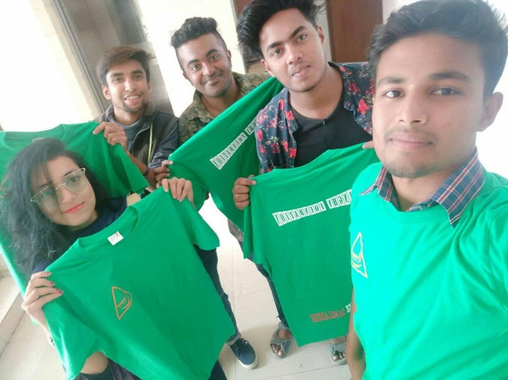
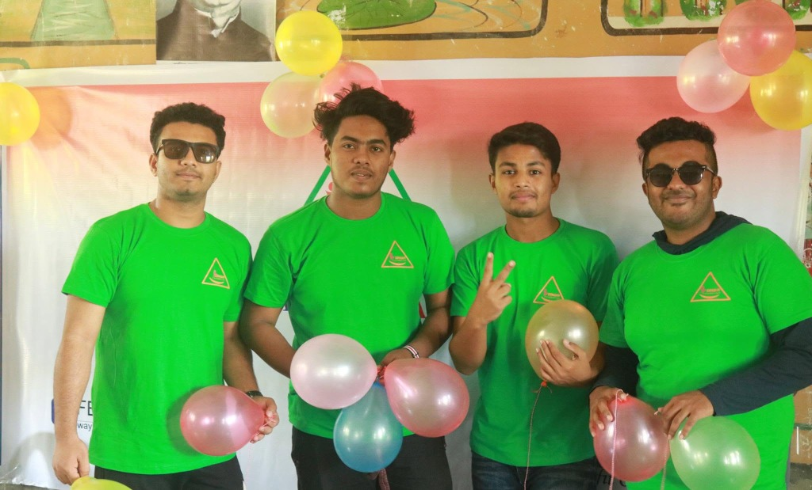
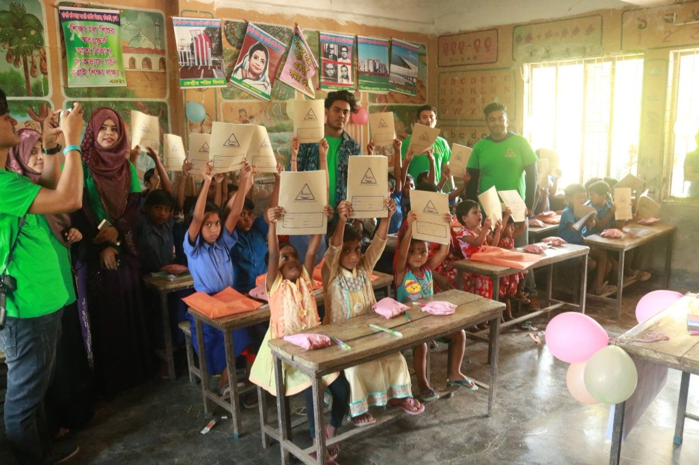
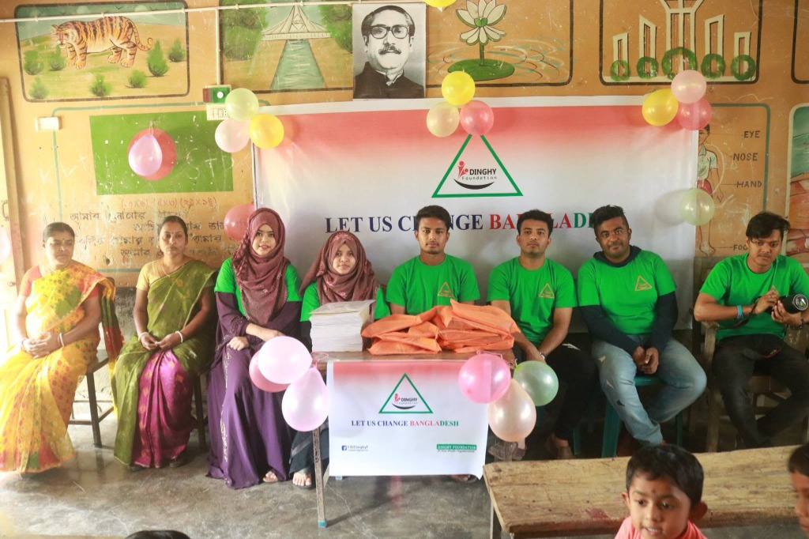
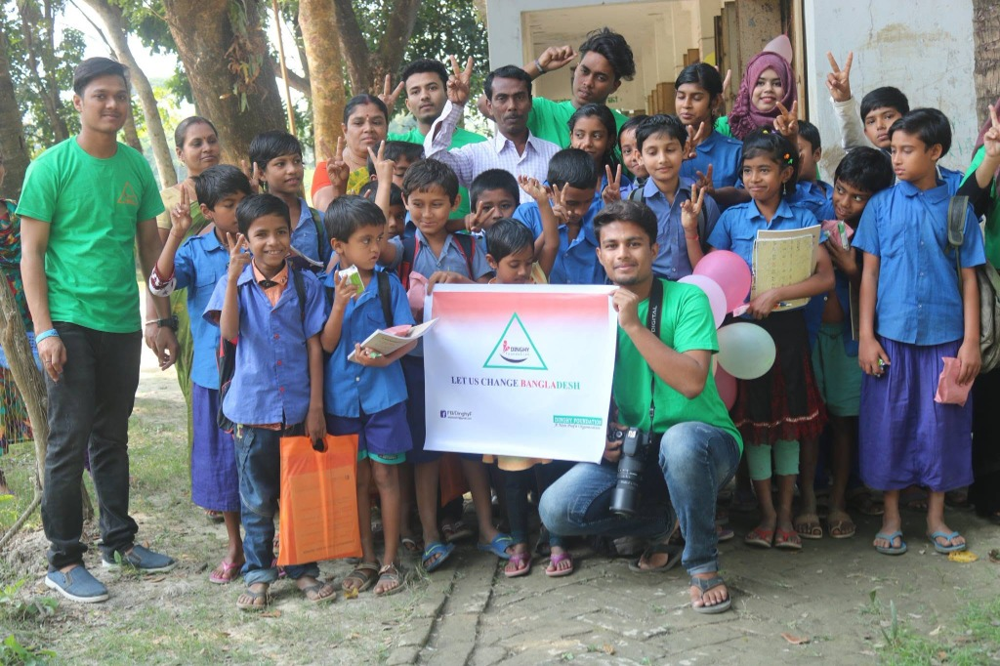
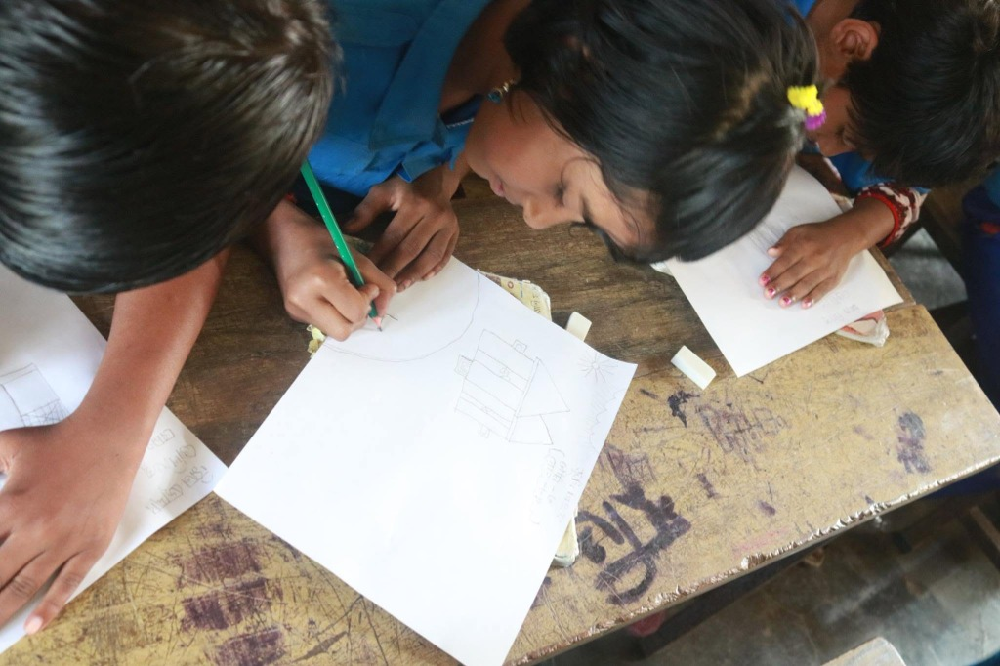
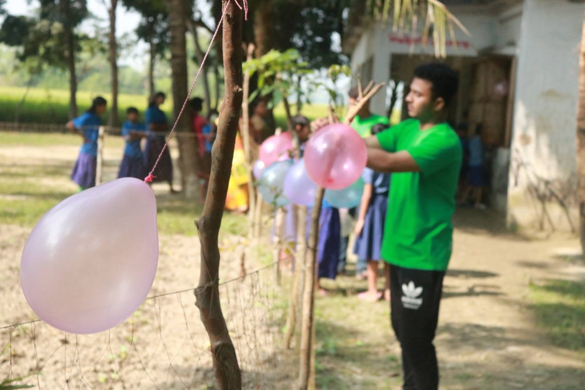
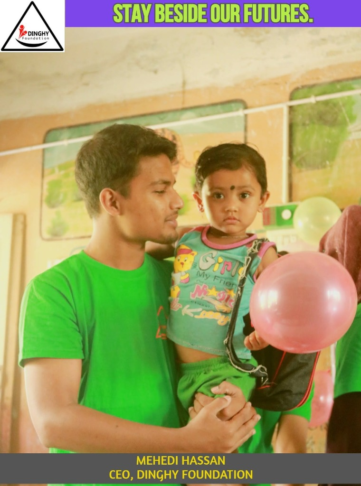

Let Us Change Bangladesh: The Story of How Dinghy Foundation Began
How a handful of university students emptied their own pockets to stand beside coastal children in Satkhira.
A Handful of Students, A Big Dream
Every big change starts small — sometimes as small as a group of university students emptying their own pockets because they couldn't stand to watch a problem go unsolved any longer.
That's how Dinghy Foundation was born.
We weren't businessmen, we weren't wealthy donors, and we didn't have a boardroom or a budget. We were students — the kind who counted our own tuition money carefully and still found a way to set some of it aside for something bigger than ourselves. We looked around at the children in our country who were growing up without books, without proper clothes, without anyone checking in on their safety or their schooling, and we decided we couldn't just look away.

📸 Late 2018: Founding student members holding their newly printed green Dinghy Foundation t-shirts, paid for out of their own personal allowances.
So we did the only thing we could: we pooled our own money. Member by member, contribution by contribution, a small circle of committed young people came together and said, "If nobody else will start this, we will." That pooled, self-funded beginning is the seed every later chapter of Dinghy Foundation grew from.
We named it Dinghy Foundation — like a small boat that carries people across water they couldn't cross alone — and we gave it a mission with three pillars close to our hearts: child empowerment, protection against child abuse, and child education. Everything else we've done since has flowed from those three commitments.
November 10, 2018: The Day It Became Real
For months, "Dinghy Foundation" was just a name, a logo — a green triangle holding tiny human figures reaching upward — and a promise we'd made to each other. Then, on November 10, 2018, it stopped being an idea and became our first real program.
We chose Hatbati South Para Government Primary School as the place where our first steps would be taken. We are endlessly grateful to the Head Sir and the teachers of that school, who welcomed a group of young, unproven volunteers and trusted us with their students. Without their support, there would be no "first program" to tell you about at all.

📸 Executive Committee under 'LET US CHANGE BANGLADESH'
The night before, and in the early hours of that day, our team was in a repurposed classroom — the same wall poster of the alphabet, the same hand-painted illustrations of a tiger and a mosque still visible behind us — packing supplies with our own hands. Soap, toothbrushes, pencils, notebooks, and small treats went into orange plastic bags, one by one, folded and sealed at old wooden desks under a poster of Bangabandhu Sheikh Mujibur Rahman. It wasn't glamorous work. It was quiet, careful, repetitive — the kind of work that doesn't photograph as "heroic" but is exactly what real change is made of.
Then the doors opened, and the children came in.
The Faces That Made It Worth It
We had prepared for numbers, but nothing prepares you for the moment a room full of children raise folders above their heads, grinning, because someone finally handed them notebooks with their own name written inside. Girls in blue-and-purple uniforms and children in their everyday clothes climbed onto old wooden benches, held their new books and pens over their heads, and posed for photos — some serious and shy, some laughing, all of them proud.

📸 Children proudly holding up their new notebooks

📸 Headmaster, teachers & team at Hatbati Primary School

📸 Students, teachers & team outside with banner
That day, under a banner that read "LET US CHANGE BANGLADESH" and decorated with balloons in soft pink, yellow, and cream, our team — dressed in matching green t-shirts printed with our triangle logo — sat beside mothers in sarees, local teachers, and community elders. Together we called forward one meritorious but financially struggling student after another, placing an orange bag of essentials into their hands. We watched a young boy in a school uniform receive his bag directly from our team members' hands, a moment witnessed by his mother, who stood close by with quiet pride.
By the end of the day, we had reached and supported around sixty students — children who were bright, hardworking, and deserving, but who came from families that could not always afford the basics that turn a child into a student: pens, notebooks, and the other small essentials that so many take for granted.

📸 Primary students drawing & writing in their new notebooks

📸 Volunteer tying balloons for the cultural celebration
It wasn't only about supplies, either. We wanted that day to feel like a celebration, not charity handed out and forgotten. So we strung balloons between the trees outside, filled the schoolyard with color, and made room for a cultural program — music, laughter, games — so that for once, the day was about joy as much as it was about need. Outside, one of our volunteers can still be seen in photographs from that day, mid-motion, tying pink and lavender balloons to a fence between the trees, while children in their uniforms gathered nearby, curious and delighted.
🎥 Historic Video Archive: Inaugural Cultural Event (Nov 10, 2018)
Watch the authentic documentary video capturing our 1st program, cultural performances, and distribution ceremony at Hatbati South Para Primary School:
More Than a Donation Drive
From the very beginning, we insisted that Dinghy Foundation would never be just a one-time gesture. That first program at Hatbati South Para Government Primary School was a beginning, not a headline. In the months and events that followed, our small team — the same faces you'll see again and again in green t-shirts, some in sunglasses, some holding balloons, some holding cameras — kept showing up. We ran awareness programs. We visited more schools. We stood with more communities, always trying to weave together our three founding pillars: keeping children safe, keeping them in school, and helping them believe they mattered enough to fight for their futures.

📸 "Stay Beside Our Futures": Founder & CEO Md Mehedi Hassan cradling a young coastal child carrying a pink balloon and school bag.
Our CEO, Mehedi Hassan, put it simply in a photo captioned "Stay Beside Our Futures" — holding a small child gently by the hand, a pink balloon floating beside them. That single image says what our long mission statements sometimes can't: this was never about statistics. It was about staying beside children, one by one, for as long as it takes.
Why We're Writing This Down
We're telling this story now — plainly, honestly, without exaggeration — because we believe our beginning matters as much as our progress. Dinghy Foundation didn't start with grants or sponsors or a five-year strategic plan. It started with students who believed that if you cared enough about a problem, you found a way to start solving it with whatever you had, even if that was only your own modest contributions and your Saturdays.
Every notebook we handed out, every balloon we tied to a fence, every bag we packed at an old classroom desk — all of it traces back to that first decision: to give what we had, together, and call it a foundation.
"Alhamdulillah, we completed our first program. We helped poor, meritorious students with financial and material support. We are thankful, always, to the Head Sir and teachers of Hatbati South Para Government Primary School for trusting us with their students on that very first day.
And we are just getting started. Let us change Bangladesh — together."
Dinghy Foundation is a non-profit organization dedicated to child empowerment, protection against child abuse, and access to education for underprivileged children across Bangladesh.
WHO WE ARE
Dignified Progress for Satkhira's Children & Families
Our Mission
To empower low-income coastal communities in Bangladesh through inclusive, high-quality education, youth leadership, and holistic awareness programs that foster self-reliance and dignity.
Our Vision
A resilient, educated, and equitable coastal society where every child reaches their full potential regardless of socio-economic or environmental hardships.
Governance & Operational Ethics
Dinghy Foundation is a community-focused non-profit initiative operating in coastal Satkhira. We maintain strict financial auditing, child protection policies, and complete operational transparency.
🌐 INSTITUTIONAL PARTNERSHIPS & GRANTS
Empower Coastal Communities Together
We invite international NGOs, funding agencies, corporate CSR partners, and academic institutions to join hands with Dinghy Foundation in driving child education, health literacy, and climate resilience across coastal Satkhira.
✔ 100% direct volunteer field deployment with zero middleman overhead.